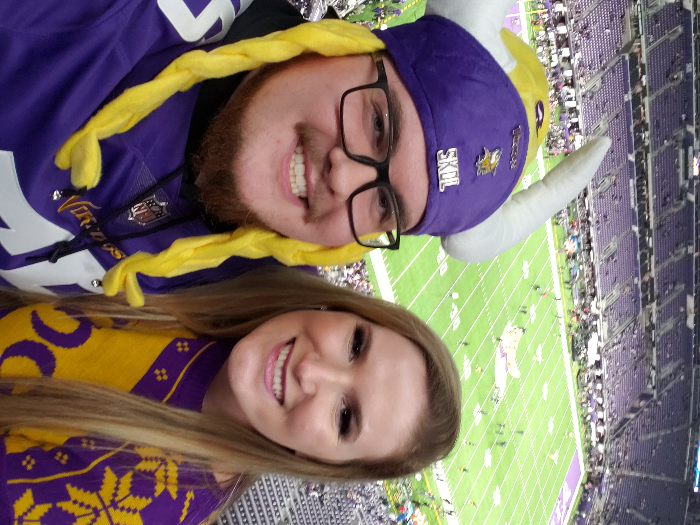

When I was 3 years old I moved away from the metro area of the Twin Cities, Minnesota to a small town called Little Falls. My younger brother Sia, who happens to also be in this cohort, was just born when we moved.
Our mom loves to retell stories of what devils we were as toddlers and small children. From running into oncoming traffic, to stealing model trains while she wasn't looking. Apparently my exploits were so devious that I had to be brought everywhere while wearing a child prtective leash.
Fortuneatly, I grew out of such wild behavior and now live a much less errtic lifestyle. While in high school, I loved playing football, gaming with my friends, and blowing my curfew to spend time with my, then girlfriend now, wife. My wife and I started dating in the 8th grade and got married after finishing college.
During college I studied biology and worked to help pay for housing and food. I finished college with a bachelors in biology, with a minor in chemistry. I had initially planned on becoming a physician, but after working 2 years in the healthcare field, decided that it wasn't the career for me.
The next 2.5 years I spent going back to college, this time to major in electrical engineering. I was always good at math and physics and so I was naturally drawn to the field. However, one semester I ended up taking C++ as an elective, and I immediatly fell in love with coding.
Now, with more debt than some people's morgages, I have finally decided on making a living doing coding. The hours are good, pay is competitve, and the time I've spent coding is fun. The oportunities were too enticing to pass up.
Hobbies
All work and no play, is no way to spend your days. I love reading, gaming, traveling, and learning to play the guitar.
Bentleyville Walkthrough Lightshow
The McQuillan Dunluce Castle

The Vikings Game
The Wedding
Life is too short to sit around and do nothing but work. My wife and I have love to travel the world, if money were no object to us, we would spend all of our time traveling. We have been to Ireland, Bahamas, Puerto Rico, Italy, Slovenia, Nicaragua, Jamaica, Mexico, and all around the U.S.
Some of the next places on the list are: Bora Bora, Japan, Portugal, Spain, and Norway. When funds are dry, I like to pass time by reading, gaming, and playing my guitars. I almost exclusively read fiction novels. The most exciting one's involve adventure. My videogame habits follow my reading habits, as my favorite games involve role playing and adventure.
When my eyes start bleeding from reading too many books, or staring at the tv, I like to take a break and jam out on my guitar. When I say jam, its more of a pluck along kinda thing. I just started leasrning a year ago, but I like to think I have gotten pretty good in that time. Not John Frusciante good, but maybe someday.
Work History
Cirrus Aircraft
Currently, I work at cirrus aircraft. I have been working on planes for 6 months now, and it has one of my favorite jobs. My currennt role has me in the paintshop working on sanding, priming, and buffing planes.
CSL Plasma
I worked at CSL Plasma for 2 years as a phlebotomist. My job consisted of stabbing people with needles, taking their plasma, and paying them for their time. Their plasma was sent to seperate lab facilities, so it could be refined into lifesaving medications.
St. Luke's Hospital
After working in a hospital for 2 years as a phlebotomist, I realized that I needed to change fields of work. Healthcare is the most challenging field I have worked in and I have a tremendous amount of respect for anyone who can work in the field and keep their sanity.